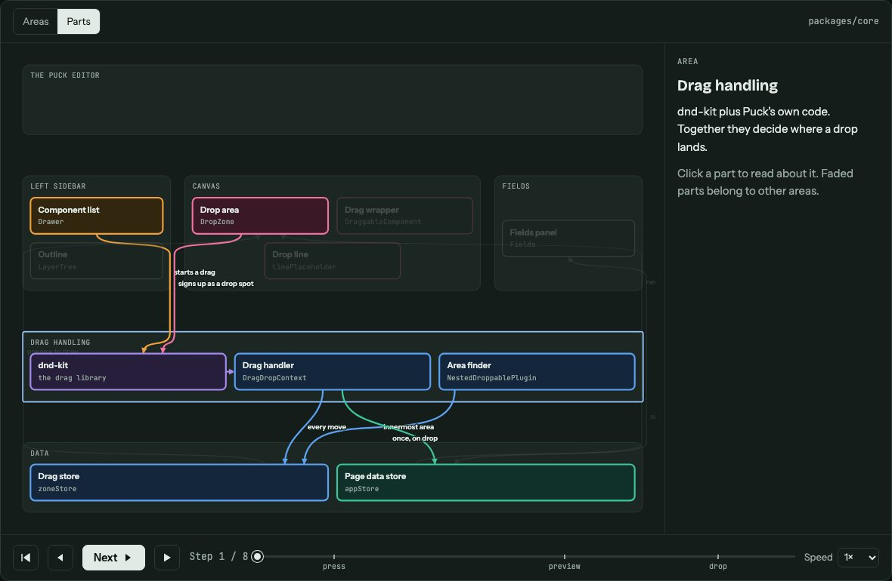
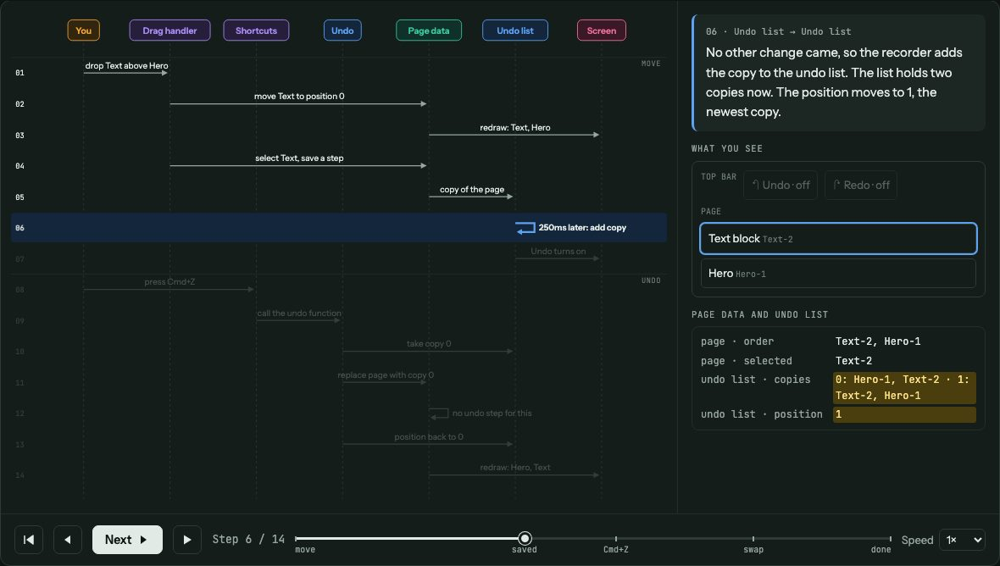
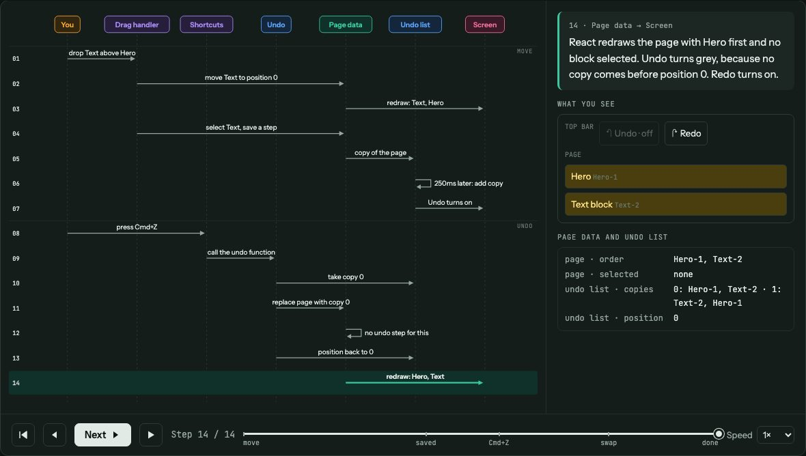
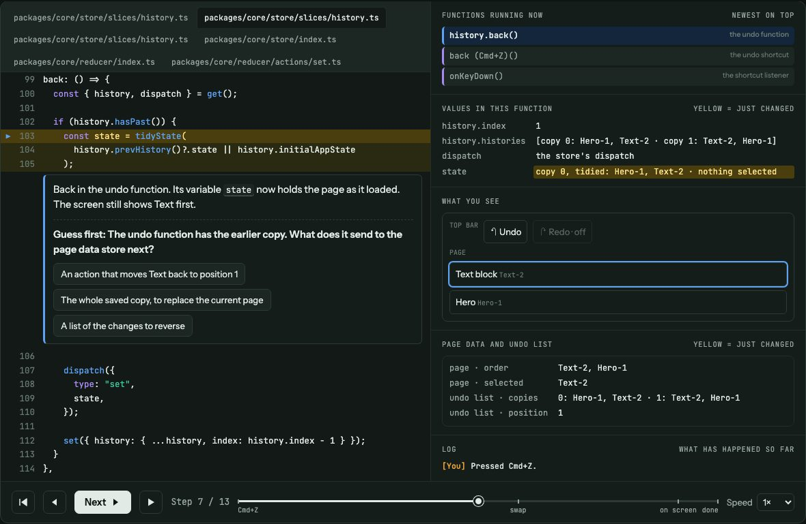
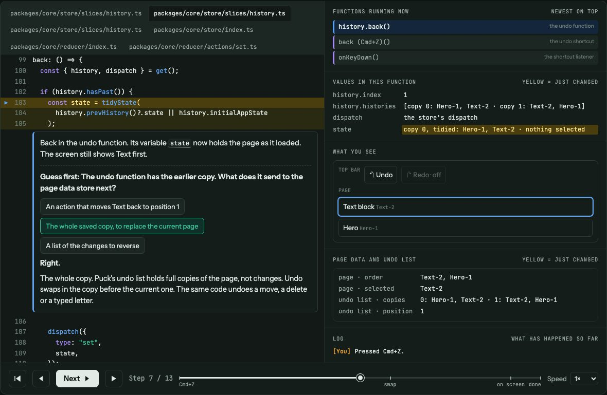

code-slowmo · promo film · storyboard v3, for review
Type a question. Watch the code answer.
A 35-second motion piece for social. No app, no terminal: one composer box on a calm dark field. Each round types a question, sends it, and the box opens out into the visualization that answers it. The visualization holds for 5 seconds (6 for the guess round) while it plays, then folds back into the box for the next question. Three rounds, one for each kind of picture: the system map, the step-by-step timeline and the line-by-line run.
The visualization frames are real stills from the example pages in the repo. The composer and caption frames are drawn small, at the 4:5 phone shape.
The motion language
The box becomes the answer
On send, the composer's outline grows into the visualization's card in one 700ms move. The typed question rides up and settles as a small label above the card. This is the film's signature move. It plays in every round, so the viewer learns the rhythm.
The picture builds itself
As the card opens, its pieces arrive in order with a 40ms stagger: map areas, timeline lanes, lines of code. Then the page plays its own steps: arrows draw, values flash yellow, blocks swap.
Five seconds, one idea
Each hold shows one thing the picture does, with one caption. The camera drifts in by about 4% and makes at most one small reframe. A cursor makes the one or two clicks a reader would make.
Three pips keep score
A thin three-part bar at the top shows map, timeline, line by line. Each fills as its round plays, so viewers know how much is left and see that the pictures zoom in, step by step.
Moves ease on cubic-bezier(.7,0,.2,1) for the morphs and cubic-bezier(.16,1,.3,1) for arrivals. A small settle on landing, no bounce.
Captions rise 12px and fade in over 300ms, line by line, in Bricolage Grotesque under the card. Out with a 200ms fade.
Everything stays in code-slowmo's own colours on its flat dark ground: no gradients, glows or particles. The life comes from things moving with intent.
Silent by default, with cut points on the sends and the morphs if you want to add music later.
Understand code by watching it run in slow motion.
0:01.0The rest follows line by line. Held 1.4s.
Understand code by watching it run in slow motion.
Ask about your code…
code-slowmo
0:02.4The line shrinks up and dims as the composer rises into the centre.
Motion
Each line of the promise rises from behind a mask, 80ms apart. At 0:02.2 the whole line scales to 55% and moves up as the composer slides up from 24px below and fades in. The line fades out by 0:03.0.
Composer
Unbranded: a rounded box, placeholder “Ask about your code…”, a small code-slowmo chip so the viewer knows which skill is on, and a round send button that lights up once there is text.
Caption
Understand code by watching it run in slow motion.0:00.2 – 0:02.8 · the README's first line, unchanged
Round 1 · the system map
0:03.0 – 0:11.7
I'm new to Puck. Give me the big pic
code-slowmo
0:03.3 – 0:05.1Typing, about 45ms a character.
I'm new to Puck. Give me the big picture.
code-slowmo
0:05.3Send pressed: the button dips to 86% and springs back.
I'M NEW TO PUCK. GIVE ME THE BIG PICTURE.↕
0:05.4 – 0:06.1The box grows into the card. The question rides up and becomes the label.
I'M NEW TO PUCK. GIVE ME THE BIG PICTURE.

See the whole system at once.
0:06.1 – 0:11.1The map plays, 5s. Real still, from puck-drop.html.
Typed
I'm new to Puck. Give me the big picture.One of the README's own example questions, with the repo named.
Build-in
The six areas of the map land one after another, top to bottom (40ms apart), then the arrows draw along their paths over 500ms.
Hold
Build-in done by 0:06.6. At 0:07.0 the cursor clicks Drag handling. The area opens into its parts: dnd-kit, Drag handler, Area finder, and the coloured arrows to the two stores light up. The camera eases in toward that row over 1s. Still from 0:08.5 to 0:11.1.
Out
0:11.1 – 0:11.7: the card folds back into the composer (the reverse move). The text clears with a quick wipe to the left. The first pip finishes filling.
Caption
See the whole system at once.0:06.4 – 0:10.9Alts: “Every part, and who it talks to.” · “Click a part to open it.”
Round 2 · one action, step by step
0:11.7 – 0:20.7
What happens when I move a block and pre
code-slowmo
0:11.9 – 0:14.1Typing.
WHAT HAPPENS WHEN I MOVE A BLOCK AND PRESS UNDO?↕
0:14.3 – 0:15.1Send, then the same opening move.
WHAT HAPPENS WHEN I MOVE A BLOCK AND PRESS UNDO?

Follow one action, step by step.
0:17.0Jump to step 6: the copy is saved, the position turns yellow.
WHAT HAPPENS WHEN I MOVE A BLOCK AND PRESS UNDO?

Follow one action, step by step.
0:18.4Jump to step 14: the undo puts Hero back on top. Hold.
Typed
What happens when I move a block and press undo?
Build-in
The seven lane labels drop in left to right (40ms apart), then the dotted lanes draw down.
Hold
Three moments instead of all 14 steps. 0:15.8 a click on Next: Text moves above Hero on the screen mock. 0:17.0 the cursor clicks the step bar at saved: the copy is added and the position flashes yellow. 0:18.4 a click at done: the undo has put Hero back on top. Each jump uses the page's real step slider. The camera stays wide enough to see the lit arrow and the screen mock together. Still from 0:18.6 to 0:20.1.
Out
0:20.1 – 0:20.7: folds back into the composer. Second pip fills.
Caption
Follow one action, step by step.0:15.4 – 0:19.9Alts: “Watch the data change as it runs.” · “Yellow means it just changed.”
Round 3 · the real code, line by line
0:20.7 – 0:30.5
What does history.back() do, line by
code-slowmo
0:20.9 – 0:22.9Typing.
WHAT DOES HISTORY.BACK() DO, LINE BY LINE?↕
0:23.1 – 0:23.9Send, then the opening move.
WHAT DOES HISTORY.BACK() DO, LINE BY LINE?

It asks you to guess first.
0:24.9The guess appears. The camera pushes in on it.
WHAT DOES HISTORY.BACK() DO, LINE BY LINE?

It asks you to guess first.
0:27.6Answer picked, marked right. Held 2.3s.
Typed
What does history.back() do, line by line?Shaped like the README's reconcileChildren example. history.back() is the function the page steps through.
Build-in
The code lines sweep in from top to bottom (15ms apart, fast like a scroll), then the right-hand panels land.
Hold
6s, one second more than the others, because the question needs reading time. The card opens two steps before the guess, so the viewer sees the yellow line jump into back() (lines 99–103) and a value flash. 0:24.9 the “Guess first” box opens and the camera pushes in on it. The question holds about 2.4s while the cursor rests on the options, then it picks “The whole saved copy, to replace the current page”. The page marks it right and explains why. Still from 0:27.6 to 0:29.9.
Out
0:29.9 – 0:30.5: folds back into the composer. Third pip fills, then all three pips fade.
Caption
It asks you to guess first.0:24.4 – 0:29.7Alts: “The real code, one line at a time.” · “Guess, then see if you were right.”
Outro · install it
0:30.5 – 0:35.5
/plugin install code-slowmo@code-slo
code-slowmo
0:30.7 – 0:31.7The install command types in, faster than the questions.
0:31.9 – 0:32.5Send. This time the box closes in on itself instead of opening out.
code-slowmo
A skill for Claude Code, Codex, Cursor and OpenCode.
npx skills add precious112/code-slowmo
github.com/precious112/code-slowmo
0:32.5 – 0:35.5End card, held 3s.
Motion
The composer narrows to a short pill, then the wordmark rises out of where it was. The other lines follow 120ms apart. Then it holds still. The last frame is the end card itself, so it doubles as the post's thumbnail.
Claims
Every line is from the README: the agents it installs into, the npx command, the repository.
End card text
code-slowmowordmark
A skill for Claude Code, Codex, Cursor and OpenCode.draftAlt: “Understand code by watching it run in slow motion.” (if the intro line moves elsewhere)
npx skills add precious112/code-slowmothe install line that works in most agents
How it will be made
A stage page in dev/motion-design-and-demo-videos/code-slowmo/: the composer, captions and pips are drawn for the film. The visualizations are the real example pages, mounted inside the card and driven through their own buttons, so every arrow, yellow flash and answer is what the skill really produces.
The small frames above show the card at its desktop width, so it looks tiny in 4:5. In the film the camera does the work: it frames the half of the card that matters in each beat (map or side panel, arrows or screen mock, code or guess), so text reads at phone size.
Rendered frame by frame with Playwright on a paused clock at 60fps, then ffmpeg, the same pipeline as the Caret films.
Delivered as code-slowmo-promo-4x5.mp4 (1080×1350, the main one for social) and code-slowmo-promo-16x9.mp4, plus versions under 10 MB for GitHub and X.
Your call
1 · The captions
One caption per round now, with two alternatives under each. Rewrite any of them, or tell me which alternatives you prefer.
2 · The time it really takes
Building a page takes the agent a few minutes. The film skips that wait.
My pick: a tiny “a few minutes later” label in the corner for the 0.7s morph, so nobody feels misled. Easy to drop if you'd rather not.
3 · More rounds?
The skill also makes a glossary of word cards and a side-by-side compare. Each extra round adds about 10s.
My pick: stay at three rounds. They are the ones the README leads with, and 35s suits social.
4 · Formats
4:5 as the main cut for social feeds, and 16:9 for the README and YouTube.